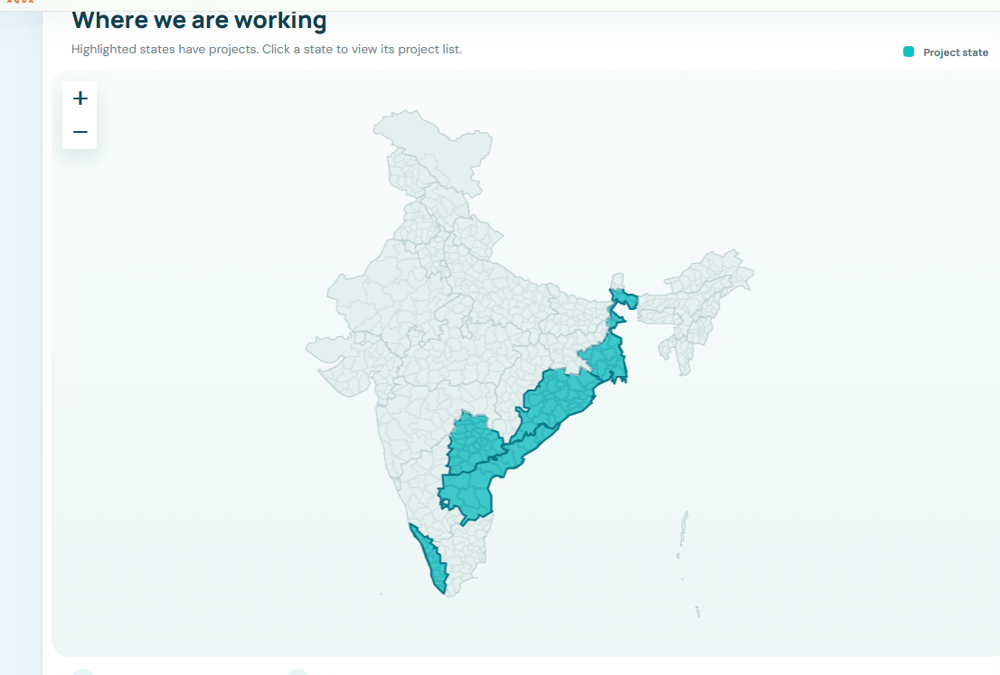

PROJECT GEOGRAPHY
Our work across India
Select a highlighted state to explore the projects completed there.
23Projects
across 5 states
across 5 states

● Only states where Blue Chain Aqua has completed projects are highlighted and selectable.
OUR PROJECTS
Our Completed
Projects.
Explore our completed project portfolio across India. Select a project state below to view the projects associated with that location.
23Projects listed
5States covered
PROJECT STATES